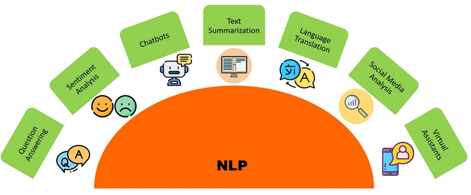

Cleaned, analyzed, and visualized personal Fitbit data to reveal actionable trends in activity, sleep, and heart rate patterns.
Analyzed personal Fitbit data to uncover patterns in physical activity, sleep, and heart rate using Python libraries such as Pandas, Matplotlib, Seaborn, and NumPy. Extracted actionable insights on daily activity trends, sleep quality, and correlations between exercise and heart rate, demonstrating the power of data-driven wellness tracking.


Leveraging Python, this analysis of Netflix data identifies key streaming trends and user preferences. The insights gained can inform content strategy, viewer engagement, and data-driven decision-making.

This project analyzes Coca-Cola sales data to identify key trends, seasonal patterns, and regional performance. Using Python for data cleaning, visualization, and statistical analysis, it delivers actionable insights to optimize sales and marketing strategies.

Leveraging K-Means clustering and Python, this analysis of brain scans identifies distinct patterns in neurological data. The project demonstrates proficiency in unsupervised machine learning and data-driven insights for healthcare applications.

This project analyzes US credit data to predict financial health, identify risk factors, and segment customers based on credit behavior. Using Python for data cleaning and ML modeling, and Tableau for interactive visualizations, it delivers actionable insights for financial decision-making.

Using SQL, this analysis of F1 racing data identifies key performance trends, driver standings, and historical race insights. The project demonstrates expertise in data extraction, aggregation, and relational database analysis.

Leveraging NLP and Python, this analysis predicts BBC news categories by extracting meaningful features from text data. The project demonstrates skills in text processing, modeling, and predictive analytics for real-world textual datasets.